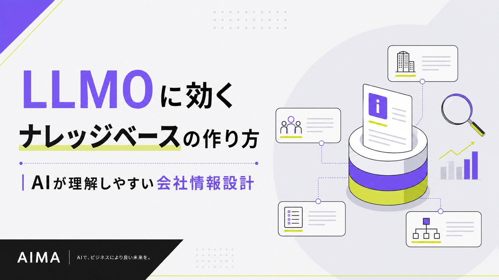
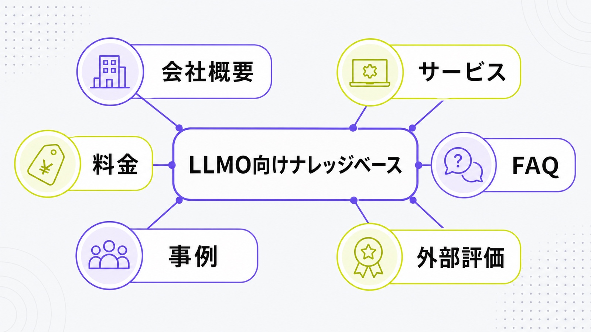
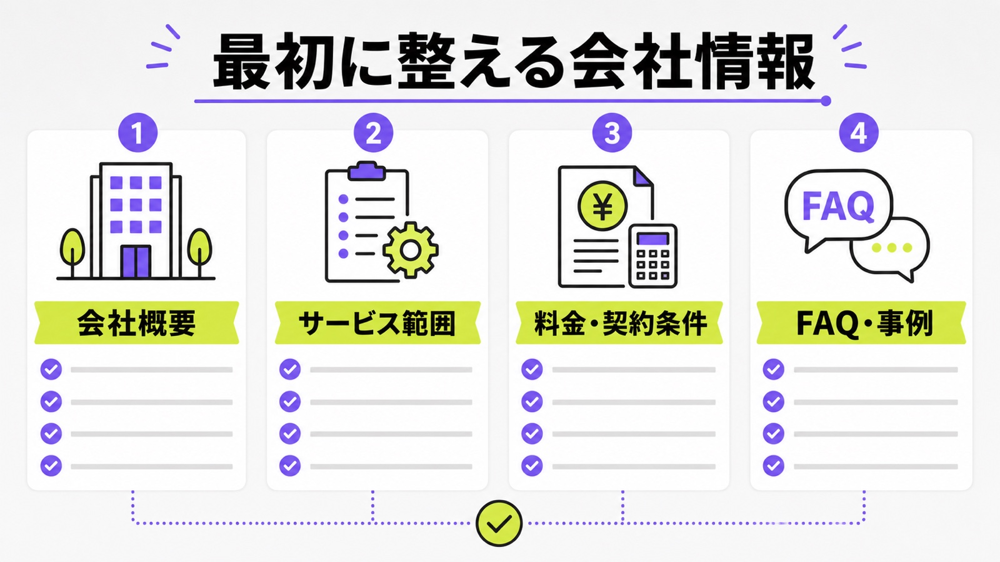
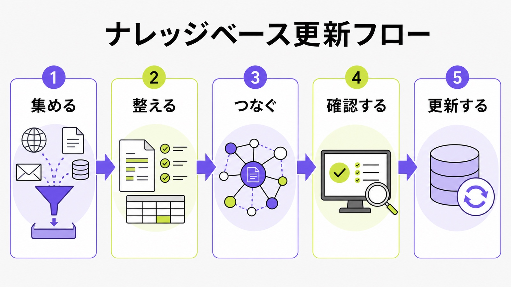

LLMOに効くナレッジベースの作り方｜AIが理解しやすい会社情報設計

LLMOでいうナレッジベースとは、AIや見込み客が「この会社は何をしていて、誰に向いていて、どんな根拠があるのか」を理解しやすくするための会社情報の置き場です。難しいシステムを新しく作る話ではありません。
最初に整えるのは、会社概要、サービス、料金、FAQ、事例、外部での紹介情報です。これらがばらばらだと、AI検索でも人間の比較検討でも説明が弱くなります。全体像を先に見たい方は、LLMO対策とは何かもあわせて確認してください。
この記事では、シート候補の「サービス/会社/FAQ/事例を接続」という切り口に沿って、AIが参照しやすい会社情報の作り方を、初心者でも迷わない順番で整理します。
目次

LLMOに効くナレッジベースとは何か
ナレッジベースという言葉だけ聞くと、問い合わせ対応用のヘルプサイトや社内マニュアルを想像しやすいです。しかしLLMOで大切なのは、社内の知識をそのまま並べることではありません。AIと見込み客が会社を判断できる材料を、公式サイト上で読みやすく整理することです。
AIが会社を説明するための根拠集を作る
AI検索では、会社名だけで選ばれるわけではありません。何を提供しているか、誰に向いているか、料金はどのくらいか、実績はあるか、よくある不安に答えているかを見ます。だからナレッジベースは、単なる情報置き場ではなく、会社を説明する根拠集として作ります。
たとえば「LLMO支援会社」とだけ書いても、AIにも読者にも違いは伝わりません。「月額5万円」「相談回数の上限なし」「記事作成と修正込み」「最低契約期間なし」のように、判断に使える情報を同じ文脈で出す必要があります。抽象的な強みより、比較時に使われる具体情報を優先しましょう。
“Create valuable, non-commodity content for your audience”
出典：Google Search Central「Optimizing your website for generative AI features on Google Search」
ただの社内FAQやヘルプとは違う
社内FAQは、社内の人が困らないための資料です。一方、LLMO向けのナレッジベースは、顧客とAIが判断に使う情報を公開するためのものです。専門用語、社内略語、古い料金、非公開条件が混ざっていると逆効果になります。公開前に、顧客が読む言葉へ直すことが大切です。
競合ページを見ると、ナレッジベース構築、一次情報コンテンツ、情報構造、モニタリングなどを支援範囲に含める会社が増えています。ただし、中小企業が最初にやるべきことは大きなシステム導入ではありません。今ある重要ページを見直し、足りない説明を足し、内部リンクでつなぐことです。

最初に整えるべき会社情報
ナレッジベースは、いきなり大量の記事を作るより、会社の判断材料をそろえるところから始めます。読者が問い合わせ前に見る情報は、AIが回答を作るときの材料にもなりやすいからです。
会社概要・代表者・所在地をひとつにまとめる
まず、会社名、所在地、代表者、事業内容、設立背景、対応エリア、連絡先を確認します。会社概要ページが薄いと、AIは外部サイトや古い情報を拾いやすくなります。公式サイト側に、正しい会社情報を一番信頼できる場所として置きましょう。
代表者プロフィールも重要です。誰が監修しているのか、どんな経験があるのか、なぜそのテーマを語れるのかを短く書きます。AIMAの記事で監修者情報を毎回入れているのは、読者とAIの両方に「誰の情報か」を伝えるためです。
サービス範囲と向き不向きを明文化する
サービスページでは、何をやるかだけでなく、何をやらないかも書きます。たとえばLLMO支援なら、調査だけなのか、記事作成まで含むのか、既存ページ修正やFAQ追加まで対応するのかを分けます。AIにも見込み客にも、提供範囲の境界線が見えるほど比較されやすくなります。
また、向いている会社と向いていない会社も書くと親切です。「社内に記事担当がいない会社向け」「毎月小さく改善したい会社向け」のように表現すると、AI回答で推薦される文脈も作りやすくなります。良いことだけを並べるより、選び方まで見せるほうが信頼されます。
“We recommend placing this information on your home page”
料金・契約条件・対応範囲を曖昧にしない
料金をまったく出していないページは、比較検討で不利になりやすいです。最低価格、月額費用、含まれる作業、別料金になりやすい作業、契約期間、解約条件を整理しましょう。全部を細かく出せない場合でも、判断できる目安は必要です。
AIMAなら、月額5万円、相談回数の上限なし、記事作成・既存記事修正込み、最低契約期間なしという情報を明記しています。こうした条件が見えると、AIも読者も「低予算で小さく始めたい会社向け」と理解しやすくなります。

| 情報 | 書くこと | 置く場所 |
|---|---|---|
| 会社情報 | 正式名称、所在地、代表者、事業内容 | 会社概要、トップ |
| サービス | 対象者、提供範囲、向き不向き | サービスページ |
| 料金 | 月額、含まれる作業、契約条件 | 料金ページ、FAQ |
| 実績 | 業種、課題、対応内容、結果 | 事例、ブログ |
FAQ・事例・外部評価をつなぐ
会社情報とサービス情報を整えたら、次は問い合わせ前の不安を減らす情報を足します。FAQ、事例、外部評価はそれぞれ役割が違いますが、つながっているとAIにも読者にも伝わりやすくなります。
FAQは顧客の質問をそのまま見出しにする
FAQは、AI検索と相性がよい情報です。ただし、社内都合の質問ではなく、顧客が本当に聞く言葉で作ります。「LLMOは何から始める？」「SEO会社に依頼中でも追加できる？」「月5万円で何まで含まれる？」のように、そのまま聞かれる質問を見出しにしてください。
回答は、最初の一文で結論を出します。そのあとに理由、条件、次に見るページを短く続けます。FAQを増やすだけでなく、該当するサービスページや事例ページへ内部リンクでつなぐと、ナレッジベース全体が読みやすくなります。技術面の整え方はFAQPage構造化データの実装方法も参考になります。
事例は業種・課題・結果まで書く
事例は、AIと見込み客に「この会社は本当にできるのか」を伝える材料です。会社名を出せない場合でも、業種、課題、実施内容、期間、結果、使ったページ、追加したFAQなどは書けます。事例では、何をどう直したかを具体的に見せます。
「記事を作成しました」だけでは弱いです。「BtoBサービスの料金ページに比較表を追加し、FAQを5件増やし、AI検索での見え方を月次確認した」のように、作業と目的が分かる表現にします。数字が出せないときも、改善したページや判断材料を具体化しましょう。
外部掲載やプロフィール情報も見直す
AIは公式サイトだけを見るとは限りません。業界メディア、採用媒体、Googleビジネスプロフィール、比較サイト、SNSプロフィールなどに古い住所やサービス名が残っていると、誤った説明につながることがあります。ナレッジベース作りでは、外部情報のズレも点検します。
まずは、自社名、代表者名、サービス名、料金、所在地で検索し、古い情報が出ていないかを見ます。修正できる外部プロフィールは直し、直せない情報は公式サイト側で正しい説明を厚くします。AI検索の誤情報対策にもつながる地味ですが大事な作業です。

AIが読みやすい置き方と技術確認
ナレッジベースは文章だけでなく、置き方も大切です。どのページに何があるのか、検索エンジンが読めるのか、AIクローラーを必要以上に止めていないかを確認します。
重要ページへ内部リンクでつなぐ
サービスページ、料金ページ、FAQ、事例、会社概要、関連ブログが孤立していると、情報のまとまりが弱くなります。サービスページから料金とFAQへ、FAQから詳しい記事へ、記事からサービスページへ戻す流れを作ります。内部リンクは、情報の道案内です。
たとえばこの記事では、LLMOの全体像、FAQの作り方、構造化データ、企業サイト設計の記事へ自然につないでいます。読者が迷わないだけでなく、検索エンジンにも「このサイトはLLMOの専門情報をまとまって持っている」と伝えやすくなります。
Organization・Breadcrumb・FAQを本文と合わせる
構造化データは、本文の代わりではありません。会社概要に表示している会社情報、記事に表示している公開日、ページ上に見えているFAQと合わせて使います。AI検索向けの特別な裏技ではなく、見える情報の補助として扱いましょう。
会社概要にはOrganization、記事にはArticleとBreadcrumbList、FAQがあるページにはFAQPageを検討します。詳しくはLLMOに構造化データは必要？で整理しています。大切なのは、JSON-LDだけを増やすのではなく、本文と同じ情報にすることです。
“OpenAI uses web crawlers (“robots”) and user agents”
robots.txtとクロール状態を確認する
どれだけ良い会社情報を書いても、検索エンジンや必要なクローラーが読めない状態では意味が伝わりません。robots.txt、noindex、canonical、サイトマップ、404ページを確認します。まずは、重要ページが読める状態かを見るだけでも十分です。
OpenAIやGoogleなど、AI検索に関係する仕組みは変化します。すべてを追いかける必要はありませんが、重要ページを誤ってブロックしていないか、古いテスト設定が残っていないかは定期的に確認してください。
更新運用とAIMAでできること
ナレッジベースは、作って終わりではありません。料金、サービス範囲、事例、FAQ、外部掲載は変わります。古い情報が残るほど、AIにも読者にも誤解されやすくなります。
月1回で古い情報を直す
毎月1回、会社概要、サービス、料金、FAQ、事例、外部プロフィールを見直します。新しい事例が出たら追加し、対応していないサービスは削り、よく聞かれた質問はFAQに足します。大がかりなリニューアルより、小さな更新を続けるほうが現実的です。
更新するときは、どのページを直したか、何を追加したか、AI検索でどう見えたかをメモしておきます。LLMOは一度の作業で終わる施策ではなく、情報の鮮度を保ちながら改善する運用です。LLMOモニタリングと組み合わせると、月次で迷いにくくなります。
AIMAなら月5万円で記事・FAQ・修正をまとめて進める
AIMAはLLMOに特化し、月額5万円、相談回数の上限なし、最低契約期間なしで支援しています。記事作成だけでなく、既存記事の修正、FAQ追加、内部リンク、会社情報の整理まで、範囲内でまとめて進められます。社内に専門担当者がいなくても、手を動かすところまで支援します。
まずは無料LLMO診断で、自社サイトがAI検索でどう見られているかを確認してください。ナレッジベースに足りないページ、先に直すべきFAQ、追加すべき事例を分けると、月5万円でも無理なく始められます。詳しい支援範囲はサービス内容をご覧ください。
参考：メディアリーチ LLMO（AIO）コンサルティング・運用代行
LLMO向けナレッジベースに関するよくある質問
LLMO用のナレッジベースは新しいCMSが必要ですか？
新しいCMSは必須ではありません。まずは今のサイトで、会社概要、サービス、料金、FAQ、事例を整えます。ページが足りなければ追加し、古い情報があれば直します。大きなシステム導入より、公式サイト上の情報整理が先です。
どのページからナレッジベースを作ればいいですか？
最初は問い合わせに近いページから始めます。会社概要、サービスページ、料金ページ、FAQ、導入事例を優先してください。そのあと、比較記事、用語解説、業界別ページ、外部プロフィールの修正へ広げると進めやすいです。
社内資料をそのまま公開してもいいですか？
そのまま公開しないほうが安全です。社内資料には、専門用語、古い条件、非公開情報、顧客に伝わりにくい言い回しが混ざりやすいです。公開前に、顧客が理解できる文章へ直し、出してよい情報だけを選びましょう。
まとめ
LLMOに効くナレッジベースは、AI専用の難しい仕組みではありません。会社概要、サービス、料金、FAQ、事例、外部評価を、公式サイト上で分かりやすくつなぐことです。
まずは、会社情報を正しくまとめ、サービス範囲と料金を明確にし、FAQと事例を足し、内部リンクでつなぎます。そのうえで、構造化データやrobots.txt、クロール状態を確認すると、AIにも人にも伝わりやすいサイトになります。
AIMAは、LLMO特化、月額5万円、相談回数の上限なし、記事作成・修正込みで、ナレッジベース作りを支援します。まずは無料LLMO診断またはお問い合わせからご相談ください。